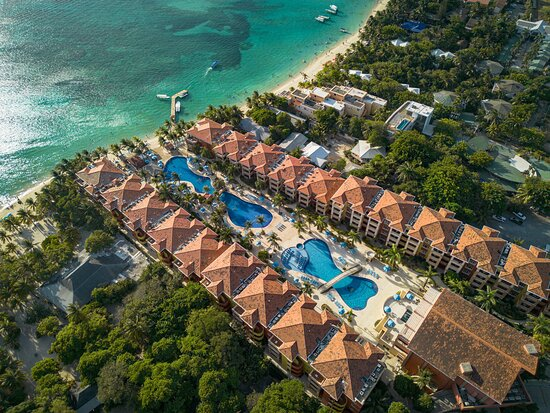
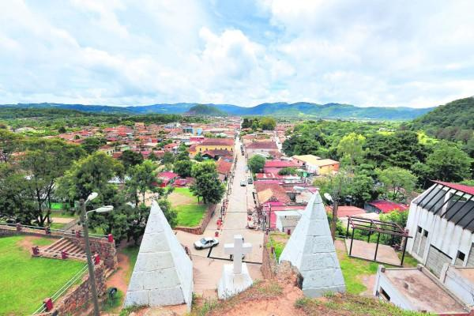
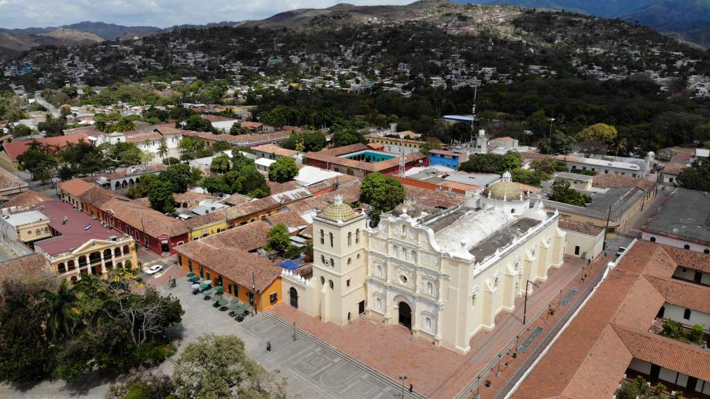
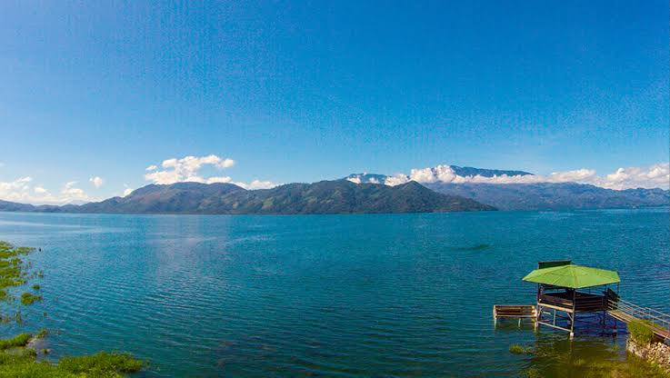

Roatán
Disfruta de playas paradisíacas, arrecifes de coral y actividades en el mar Caribe
Conocer mas?Una forma de conocer Honduras y sus atractivos turísticos
Telefono:+504 2220-0020
Honduras te espera con pueblos llenos de historias y tradiciones, montañas llenas de vida y playas de aguas cristalinas
que reflejan el orgullo de los hondureños.
Ven a descubrir su riqueza natural y cultural mientras vives experiencias que te conectarán con la escencia de Honduras.
Honduras: Descubre, disfruta y conservala siempre
EXPLORAR HONDURAS ->Esplora algunos de los kugares mas representativs de nuestro país

Disfruta de playas paradisíacas, arrecifes de coral y actividades en el mar Caribe
Conocer mas?
Descubre uno de los lugares cuna de la cultura lenca, tradiciones locales y el clima fresco de la zona
Conocer mas?
Recorre calles historicas que dtan de la epoca colombina, su catedral y arquitectura colonial
Conocer mas?
Disfruta del unico lago natural de honduras, junto a su comida en los diferentes puestos que te ofrece
Conocer mas?Conoce más sobre nuestro país, su riqueza natural, su cultura y que lo hace unico
Honduras se encuentra en América Central y tiene una superficie de 112,492 km².
Limita con los países de Guatemala , El Salvador ambos al occidente del país y Nicaragua en la parte oriente-sur del país.
Su capital está conformada por las ciudades gemelas de Tegucigalpa y Comayagüela ubcadas en el Distrito Central, Francisco Morazán
Dato extra: El país está conformado en 18 departamentos y 298 municipios.
Honduras posee bosques tropicales, manglares, montañas, humedales y arrecifes de coral.
En sus ecosistemas habitan numerosas especies de aves, mamíferos, reptiles y vida marina.
Lugares destacados: Río Plátano, el Parque Nacional Pico Bonito
El clima varía según la región. Las costas suelen ser cálidas, mientras que las zonas montañosas tienen un clima mas fresco. También existen períodos lluviosos y secos.
Para visitar: La Tigra, el Lago de Yojoa y las cataratas de Pulhapanzak.
La moneda oficial es el Lempira hondureño, codigo HNL y su símbolo es L. El Banco Central de Honduras es la institución responsable de la política monetaria del país.
Actividades importantes: agricultura, industria, comercio y turismo.
Honduras cuenta con una gran diversidad cultural, tradiciones, gastronomía, artesanías y expresiones artísticas que forman parte de su identidad. El español es el idioma predominante.
Experiencias: Conocer la cultura lenca, disfrutar de la gastronomía local y visitar pueblos históricos.
Desde playas en el caribe hasta pueblos de tiempos de Cristobal Colón y paisajes montañosos, Honduras ofrece opciones para quienes buscan aventura, descanso, gastronomía, historia y contacto con la naturaleza.
Destinos emblemáticos: Roatán, Copán Ruinas, Comayagua, La Esperanza y Tela.